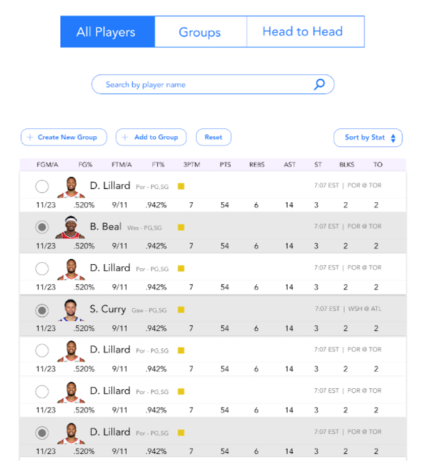
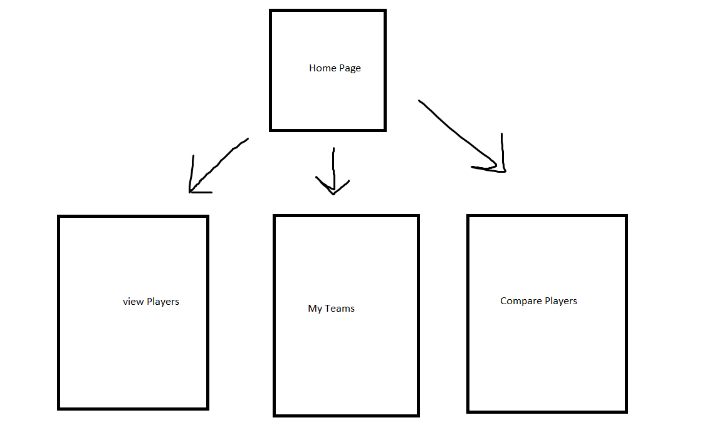

Fantasyzer
Fantasy Basketball Analytics Platform

Overview
Problem: When scrolling through NBA player stats online there are hundreds of players and no way to compare smaller subsets of players for fantasy picks. For example, if you are looking at the ESPN stats table and you want to compare player 2 (Bradley Beal), 9 (Kevin Durant) and 13 (Nikola Jokic) you have to look through the noise of the other 9 players that are in between which presents a poor user experience.
Solution: An NBA player comparison website that lets you create your own sortable tables of players as well as compare players head to head.
Data Model
The application stores Users, Players Data, and Lists:
- Users can have multiple player lists (via references)
- Each list can have multiple statistics (by embedding)
Example User:
{
username: "Fantasy Player 1",
hash: // a password hash,
lists: // an array of references to User's Fantasy Teams
}Example List with Embedded Stats:
{
user: // a reference to a User object
name: "Fantasy Team 1",
stats: [
{ player: "LeBron James", team: "Los Angeles Lakers", Age: "36"},
{ player: "Stephen Curry", team: "Golden State Warriors", Age: "33"},
],
createdAt: // timestamp
}Wireframes and Site Map
/viewPlayers - page for viewing players
/myTeams - page for showing user's fantasy teams

/comparePlayers - page for comparing player statistics

Site Map
